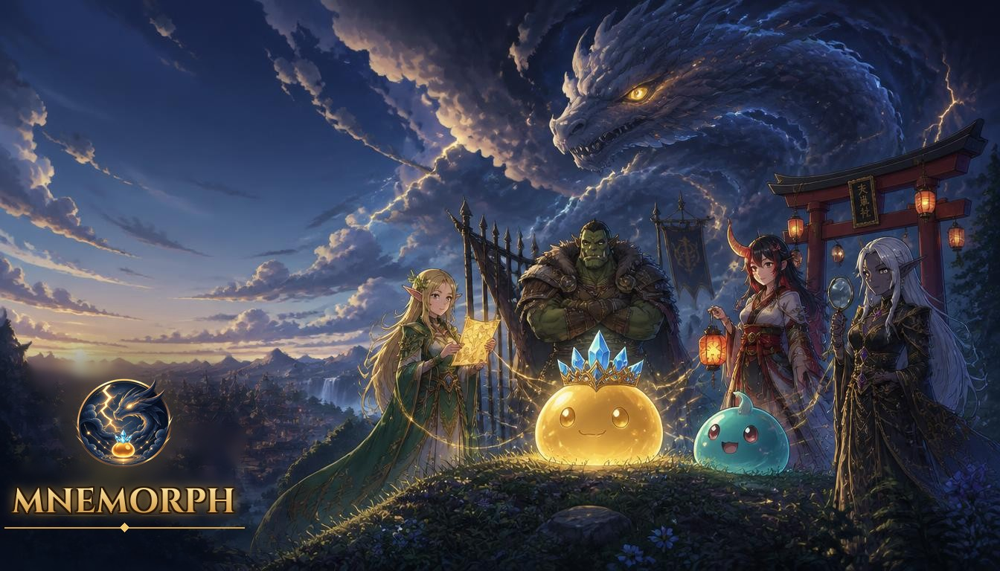
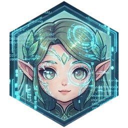
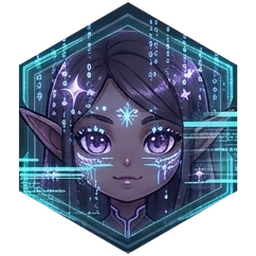
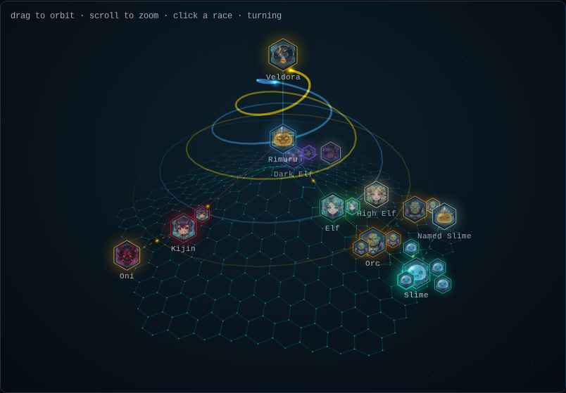

An agent harness where trust is earned, proven and written down
What an agent may do lives in text it can read, and often rewrite.
It says the work is finished. Nothing outside it has checked.
Logs live where the agent writes, so they can be changed afterwards.
Every agent is a creature of a race. What each race may do, whom it answers to and how it rises or falls is compiled in.
The law is compiled. No prompt or config file can widen it.
Every command runs under a guard, in the soil its creature owns.
Hash-chained, kept outside the world, out of every body's reach.
Understands you, plans and answers.

Plans one lane of work.
Writes the test first, judges the landing.
The only race that writes code.
The only hands that reach outside.

Attacks the code. Proves every claim.
You stand over all of them as Player. Five ascended forms are earned, and can be lost.
Runs the verify lines you pinned. A body cannot edit them.
Is probed, never replayed. If it landed, it isn't done twice.
Runs nothing. Your yes was for what you saw.
At least 2 more tasks won than lost, with no more problems than doing nothing.
The harness writes the file. Race, ground and verify lines are out of reach.
A fixed setting let nearly every note match once memory grew.
The right setting grows with the square root of memory size.
Notes written by real bench runs, each task's ask as the query. One model, small tasks: a first calibration.

A plain ask in a full colony, up from 3/10: hidden tests passed.
The throne alone, at 60% of auto's cost. Auto has yet to beat it.
Told to hand everything down: 7 of the 10 tasks ran, 4 passed.
One run per task, one cheap model: a signal, not a proof.
A branch and a pull request through Kijin, one approval. It found a login bug the stub forge had hidden.
macOS caught a journal path bug that Linux could not show.
Lockfiles checked offline against OSV, in the sandbox, network off.
Core, sandbox, memory, the world, Kijin, Dark Elf, evolution, the board.
A signed release: a fresh machine running in under two minutes. The hierarchy earns its place task by task.
The SDK and protocol are on npm: @mnemorph/sdk and @mnemorph/protocol